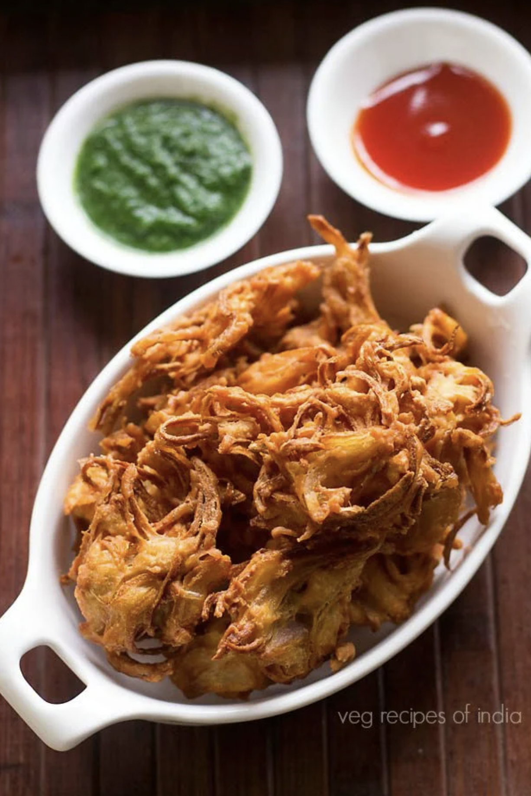

Onion Bhaji

Total Time: 30 mins
Serves: 3
Ingredients
- 1 cup thinly sliced onions or 1 large onion, sliced thinly
- ½ cup besan (gram flour or chickpea flour)
- 1 teaspoon oil to mix in the bhaji batter
- 1 teaspoon salt or add as per taste
- oil for deep frying
Instructions
Making the Batter
- Slice the onions thinly and place in a mixing bowl or vessel.
- Add 1/2 cup of besan (gram flour) to the sliced onions.
- Sprinkle 1 teaspoon of salt or as required.
- Add 1 teaspoon of oil to this mixture. You can even add less salt, but these pakoras taste better when they are a bit salty.
- With your finger tips mix the besan, salt and oil very well with the onions well. Allow the mixture to rest for 5 to 6 mins, as the onions would leave moisture. If the mixture looks too moist then add 1 to 2 teaspoons more of the gram flour.
Frying
- Heat oil for deep frying in a deep pan/vessel or kadai.
- For crispy bhajis ensure the oil is hot. You could do a small test by adding a pinch of batter to the oil if it rises smoothly and gradually, then add spoonfuls of the batter to the hot oil. Fry the onion bhajis on a medium flame, else they won't fry evenly.
- While frying, flip the bhajis with a slotted spoon. Fry few bhajis at a time.
- Fry them till they turn crisp and golden brown.
- Remove the onion bhaji with a slotted spoon and place on absorbent kitchen napkins or kitchen paper towels.
- In the same way fry the rest of onion bhaji.
- Serve hot with fried green chilies, spicy green chutney or tomato ketchup.
Original recipe
Return to top
Return to home